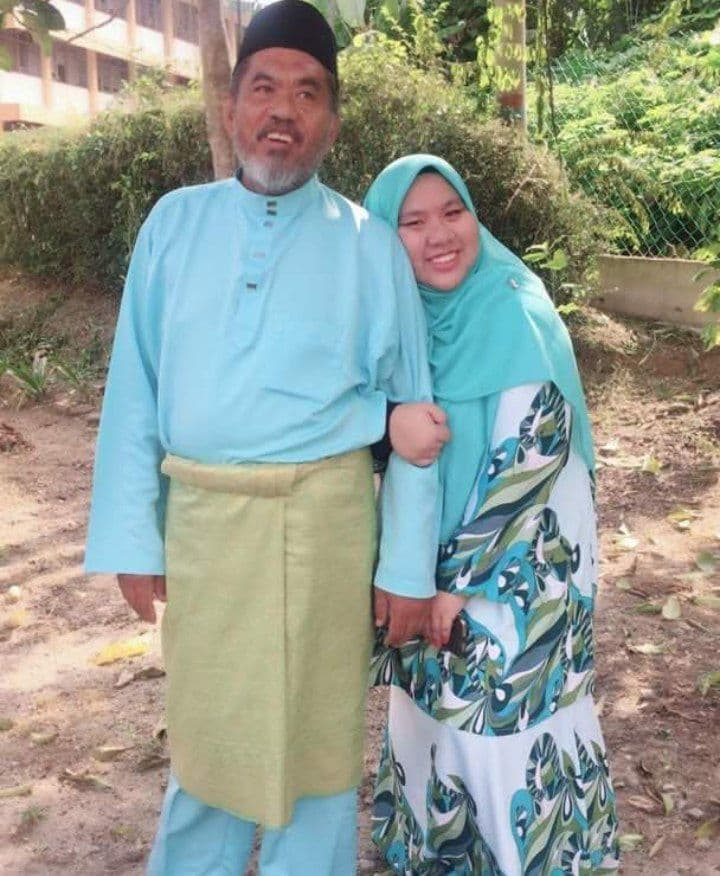
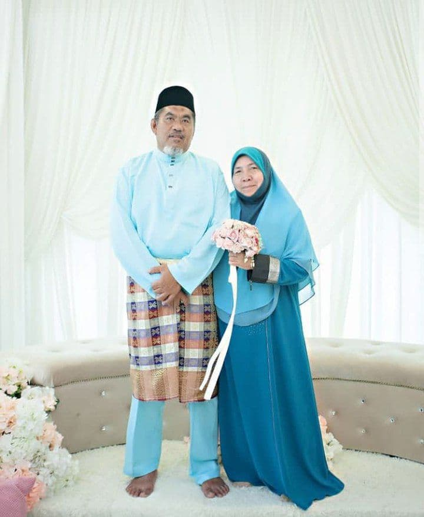
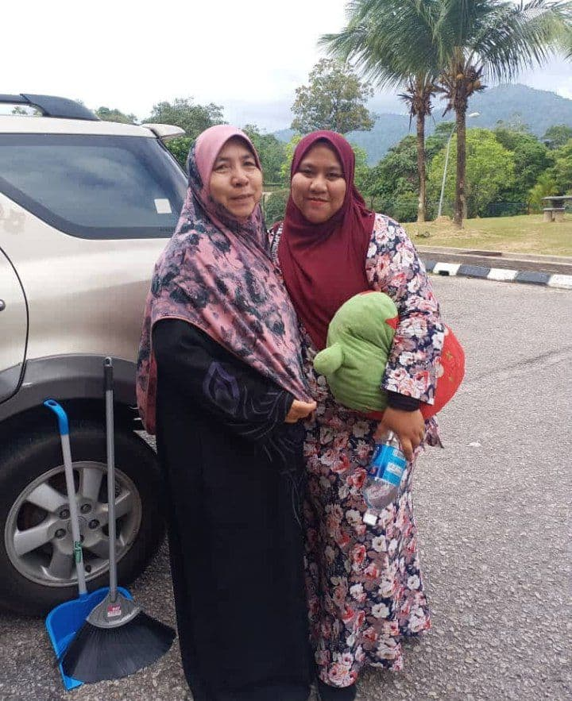
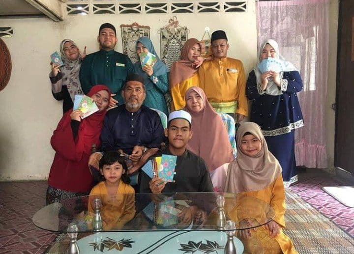
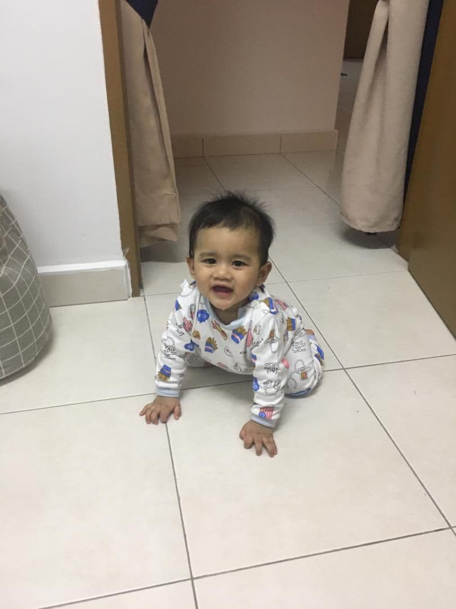

HOME
BIODATA
FAMILY
SCHOOL
EXPERIENCE
THE ONE THAT NEVER LEAVE ME ALONE




SO, THIS IS MY SMALL FAMILY
my father's name KAMARUDDIN BIN WOK and he's 61 years old *but still look young. hhehehe....
my mother is RASMAH BINTI HASHIM and she is 60 years old yet still pretty.
i have 6 siblings. and have 3 sisters 1 big brother and my baby brother.
me also have 2 nieces (another one soon) and one nephew.

so here my nephew that i babysit rightnow while study.